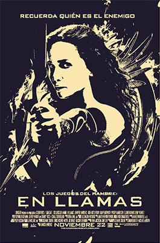
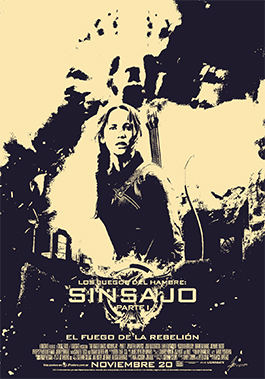

¿Qué es Los Juegos del Hambre?
Los Juegos del Hambre es una saga cinematográfica que redefinió el cine juvenil desde su estreno en 2012. Basada en las novelas de Suzanne Collins, la historia fue llevada a la pantalla grande con un estilo visual poderoso, un tono oscuro y una protagonista inolvidable: Katniss Everdeen, interpretada por la multipremiada Jennifer Lawrence. La primera película marcó un antes y un después en el cine distópico, conquistando tanto a adolescentes como a adultos con su mirada crítica y emocionalmente intensa. Ambientadas en un futuro totalitario y fragmentado, las películas siguen la vida de Katniss, una joven del Distrito 12 que se ve obligada a competir en los macabros Juegos del Hambre. Lo que comienza como una lucha por la supervivencia se transforma en un levantamiento contra un sistema brutal. A lo largo de las cuatro entregas, vemos cómo Katniss evoluciona: de ser una chica silenciosa y reservada, a convertirse en el rostro de una revolución que sacude los cimientos del Capitolio. Con una producción impecable, efectos visuales envolventes, y una dirección que equilibra acción, tensión política y momentos profundamente humanos, la saga se consolidó como una de las más influyentes de la década. La crudeza de los combates, el uso simbólico del fuego y el sinsajo, y la capacidad del cine para transmitir desesperanza y resistencia, convirtieron a Los Juegos del Hambre en mucho más que un fenómeno adolescente: fue un reflejo cinematográfico del miedo, la esperanza y la lucha por la libertad. Cada película fue recibida con enorme expectativa, generando debates y emociones entre los espectadores.
Una historia que marcó a toda una generación
Cuando Los Juegos del Hambre llegó a los cines en 2012, el mundo del entretenimiento cambió para siempre. No era solo otra saga juvenil: era una historia cargada de significado, de tensión social, de heroísmo real. En un escenario distópico pero inquietantemente familiar, millones de espectadores se sintieron representados en la lucha de Katniss, una chica común que se transformó en símbolo de esperanza para los oprimidos. La saga cinematográfica, protagonizada magistralmente por Jennifer Lawrence, no tardó en convertirse en un fenómeno global. Las películas no solo revivieron el amor por el cine épico juvenil, sino que también abrieron el camino a una nueva ola de producciones con protagonistas femeninas fuertes, complejas y reales. Las imágenes del Sinsajo, el icónico saludo de tres dedos, los trajes de Cinna y la resistencia del Distrito 13 se volvieron parte del imaginario colectivo de una generación. Pero su impacto fue mucho más allá de la pantalla. Los Juegos del Hambre se convirtió en un símbolo de rebeldía y conciencia. Su crítica al control mediático, a la desigualdad social y a la banalización del sufrimiento resonó con fuerza en una época marcada por cambios políticos y sociales. La saga inspiró debates en aulas, artículos en medios y hasta protestas en las calles. Hoy, más de una década después, su legado sigue intacto. La música, el arte, los fanfics, el cosplay, las teorías y los análisis no dejan de surgir. Los Juegos del Hambre nos enseñó que la ficción también puede ser revolución, que la juventud tiene voz y que, incluso en la oscuridad más profunda, una chispa puede encender el fuego que cambie el mundo.

- 
- 